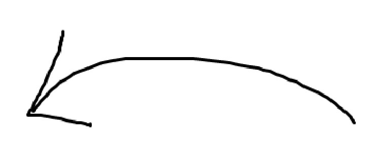

<div class="press-section">
    <div class="press-grid">
      <div 
        class="press-item" 
        *ngFor="let item of workItems" 
        (click)="onPressItemClick(item,$event)"
        [class.active]="selectedItem === item">
        
      </div>
    </div>
  </div>
  <div class="featured-image-container">
    <div class="featured-image">
      
    </div>
    <div class="featured-title" *ngIf="selectedItem">
        
      <h4>{{ selectedItem.title }}</h4>
      <p class="featured-description">{{selectedItem.description}}</p>
      <button class="Launch-button" (click)="onLaunchbuttonClick(selectedItem, $event)">Launch Product
        <div class="divider">
        <svg class="default-icon" width="32px" height="32px" viewBox="0 0 24 24" fill="none" xmlns="http://www.w3.org/2000/svg">
            <g id="SVGRepo_iconCarrier">
              <path d="M15 13.5V9M15 9H10.5M15 9L9.00019 14.9999M21 12C21 16.9706 16.9706 21 12 21C7.02944 21 3 16.9706 3 12C3 7.02944 7.02944 3 12 3C16.9706 3 21 7.02944 21 12Z" stroke="#000000" stroke-width="2" stroke-linecap="round" stroke-linejoin="round"></path>
            </g>
          </svg>
        <svg class="hover-icon" width="32px" height="32px" viewBox="0 0 24 24" fill="none" xmlns="http://www.w3.org/2000/svg">
            <g id="SVGRepo_iconCarrier">
              <path d="M15 13.5V9M15 9H10.5M15 9L9.00019 14.9999M21 12C21 16.9706 16.9706 21 12 21C7.02944 21 3 16.9706 3 12C3 7.02944 7.02944 3 12 3C16.9706 3 21 7.02944 21 12Z" fill="#4ade80" stroke="#ffffff" stroke-width="2" stroke-linecap="round" stroke-linejoin="round" ></path>
            </g>
          </svg>
        </div>
      </button>
    </div>
  </div>